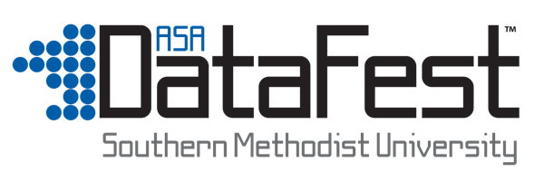

|  | ||
OverviewThe American Statistical Association (ASA) holds an annual challenge known as DataFestSouthern Methodist University will be hosting the first ever DataFest in the state of Texas! Teams of 2-4 undergraduates will compete over a long weekend for who can come up with the most compelling analysis or visualization of a given data set If you are interested in being involved, either as a participant, judge, advisor, or sponsor, email Bivin Sadler (bsadler@smu.edu) [edit: maybe make a new, temporary email address?] |
||
DetailsPlease check back here for regular updates to the schedule. |
||
Location |
Southern Methodist University | |
Participants |
This competition is open to anyone who is currently an undergraduate (subject to available space). There is no registration fee and food will be provided. Students are responsible for their own hotel accomodation, however. | |
Prerequisites |
There are no formal prerequisites. The data set will be provided and be approx. 1 Gb in size. In order to have a reasonable chance at success, the team should be familiar with some statistical computing platform (e.g. R, SAS, Python,...) and have some basic statistical skills. | |
Requirements |
The teams will need to provide their own computing infrastructure (computer, monitor, server, power cord, etc...). We will provide electrical outlets and tables, as well as refreshments and food. | |
Important Dates |
|
|